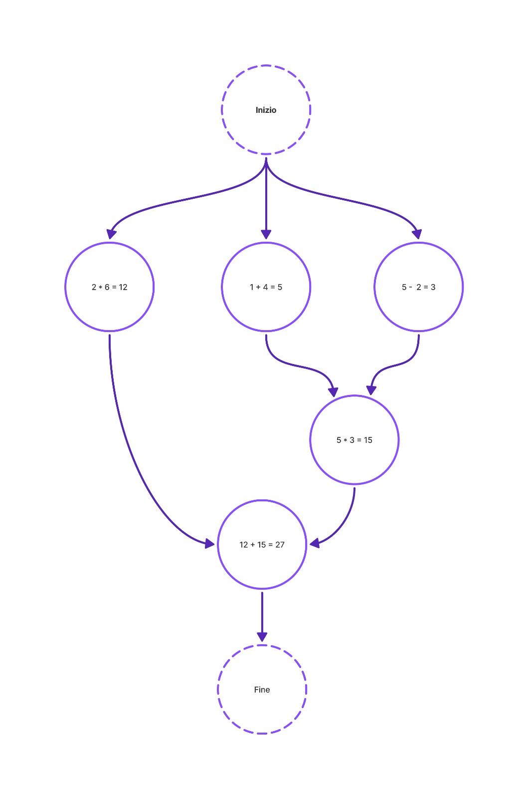
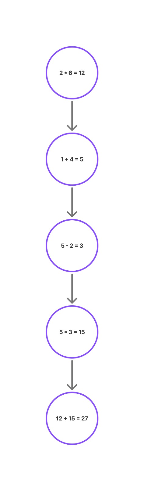

Esempi di Grafo delle Precedenze
Flusso Parallelo
Nel flusso parallelo, diverse operazioni vengono eseguite simultaneamente in rami separati, per poi convergere. Questo approccio rappresenta perfettamente il concetto di programmazione concorrente, dove più attività indipendenti possono essere processate nello stesso intervallo di tempo. In questo esempio:
- Le operazioni 2 * 6, 1 + 4 e 5 - 2 vengono eseguite in parallelo.
- I risultati intermedi vengono poi utilizzati per calcoli successivi, come 5 * 3 e 12 + 15.
- Il processo termina con un unico risultato finale: 27.
- Ideale per sistemi multi-thread o processi asincroni, dove l'efficienza è prioritaria.
Flusso Sequenziale
Il flusso sequenziale rappresenta una catena lineare di operazioni, dove ogni passo dipende dal completamento del precedente. È il modello classico di esecuzione in molti linguaggi di programmazione imperativi. In questo caso:
- Le operazioni vengono svolte una alla volta: prima 2 * 6, poi 1 + 4, e così via.
- L’ordine è fondamentale e non è possibile anticipare nessun calcolo.
- Anche qui si arriva al valore finale 27, ma tramite un approccio più semplice e prevedibile.
- Perfetto per algoritmi deterministici e flussi logici semplici.